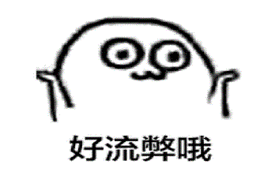

<!DOCTYPE html>
<html>
<head>
    <meta charset="utf-8">
    <meta name="viewport" content="initial-scale=1.0, maximum-scale=1.0, user-scalable=no" />
    <title></title>
     <link rel="stylesheet" type="text/css" href="css/index.css"/>
    <script type="text/javascript">
    	
   		document.addEventListener('plusready', function(){
   			//console.log("所有plus api都应该在此事件发生后调用，否则会出现plus is undefined。"
   			
   		});
   		
    </script>
</head>
<body>
	
	
	</body>
	<div id="one">
	D：一只外干中强的刺猬
在你和善亲切的外表下，可是藏着一颗永不满足的狂野之心哦。你天资聪颖，能够洞察同事的内心和揣摩上司的意图，属于办公室“大师级”人物。你冷静理智又不失热情，总是不动声色地替同事解决工作困难，所以你获得很多好评。别看你表面上一副与世无争的亲和，其实你很清楚自己要的是什么以及为了目标该牺牲什么或争取什么。于悠哉游哉的工作态度中螺旋式上升，你这只敏感的刺猬，可以说是“杀人于无形”啊！

<br>
<br>
	<input type="button" value="再测一次" onclick="window.location.href = 'q1.html'">
	<input type="button" value="首页" onclick="window.location.href = 'index.html'">
</div>
	
</html>